How we work: every technical decision, traceable from the business objective to the measured result.
Each stage has a concrete deliverable and an exit criterion — we don't move to the next one until it's met. The next slides walk through each stage in detail, with an example of how it plays out in practice.
Translate the business problem into a measurable outcome.
X-ray the data, architecture, risks, and feasibility.
Design the target solution, the roadmap, and the cost.
Build iteratively and test the PoC hypothesis.
Production, measuring results, and continuous improvement.
Evolve closes the loop against the objective defined in Target: the measured result is always compared against the original baseline. That traceability is ZirconTrace's signature.
We translate the business problem into a measurable outcome: prioritized use cases, each with an owner, a KPI, and a baseline.
A short document, no technical jargon: the central problem, prioritized use cases (owner, KPI, baseline, estimated value), and the service package that best frames the starting point.
There's at least one use case with an owner, a KPI, and an estimated value — confirmed in writing before Read starts.
We x-ray the current state — data, architecture, risks, feasibility — before designing anything.
Gaps by CAF perspective, a review against the 6 pillars of Well-Architected, the state of your data, and your exposure under Chile's Law 21.719 if you operate there.
Feasibility confirmed — data, architecture, and compliance — before moving to Architect.
We design the target solution, the roadmap, and the cost — before we build, not after.
An architecture diagram, a checklist against the 6 pillars of Well-Architected, a phased roadmap, month-by-month cost estimates, and the PoC's success criteria.
Estimated cost approved and PoC scope agreed, with measurable success criteria.
We build iteratively and test the hypothesis against the success criteria defined in Architect.
Testing evidence per environment, each success criterion with its result, a closing demo, and an explicit, documented go/no-go decision.
Every success criterion has a recorded result, and there's a documented continuity decision.
Production, measuring results, and continuous improvement — this is where we close the loop against the objective defined in Target.
The traceability artifact: the Target objective, the baseline, the KPI measured in production, and the delta. Cost dashboards, and an evolution plan.
A positive delta, or if not, explained with an action plan — and at least one evolution item for the next period.
From a business problem to a measured, traceable result — with clear gates at every step of the way.
A short meeting to understand your context and the problem you want to solve.
We leave with prioritized use cases, each with an owner, a KPI, and a baseline.
Read, Architect, Craft, and Evolve — with a quality gate at every stage.